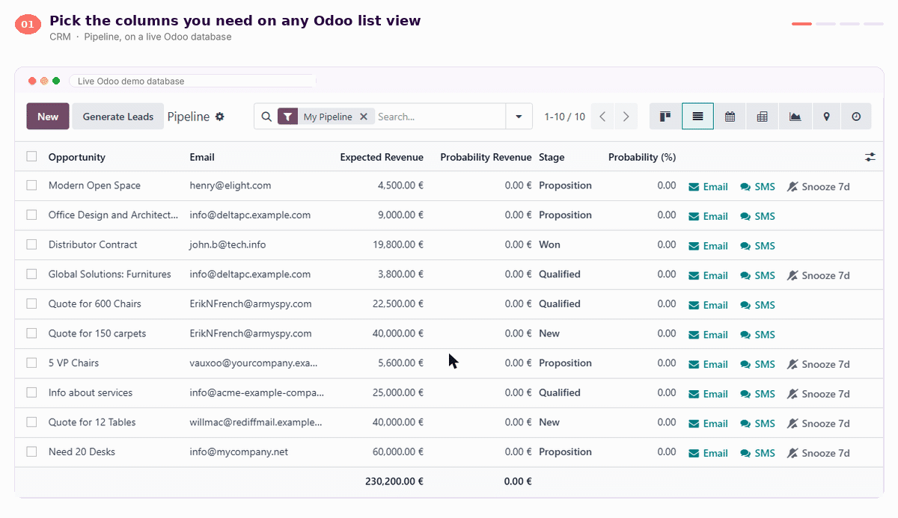
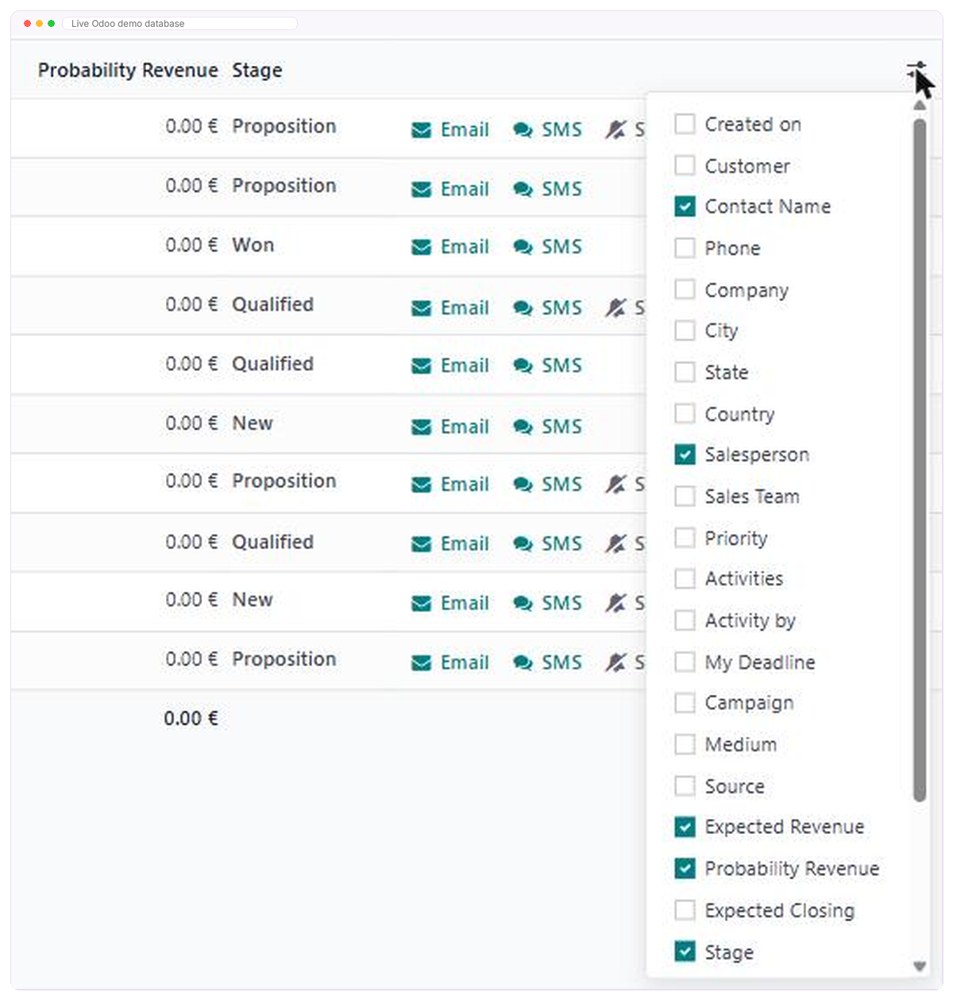
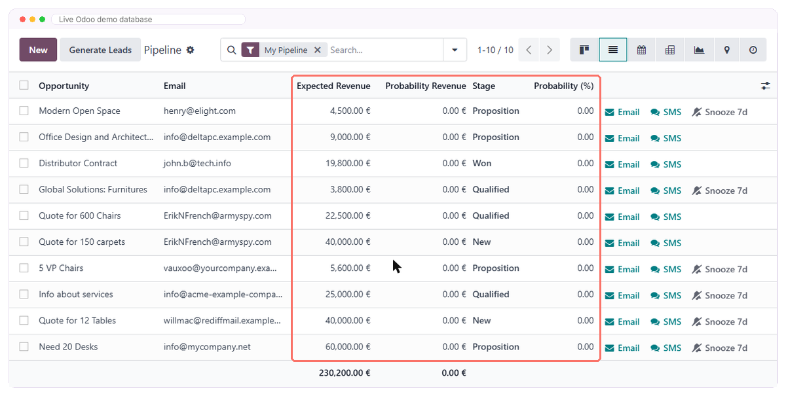
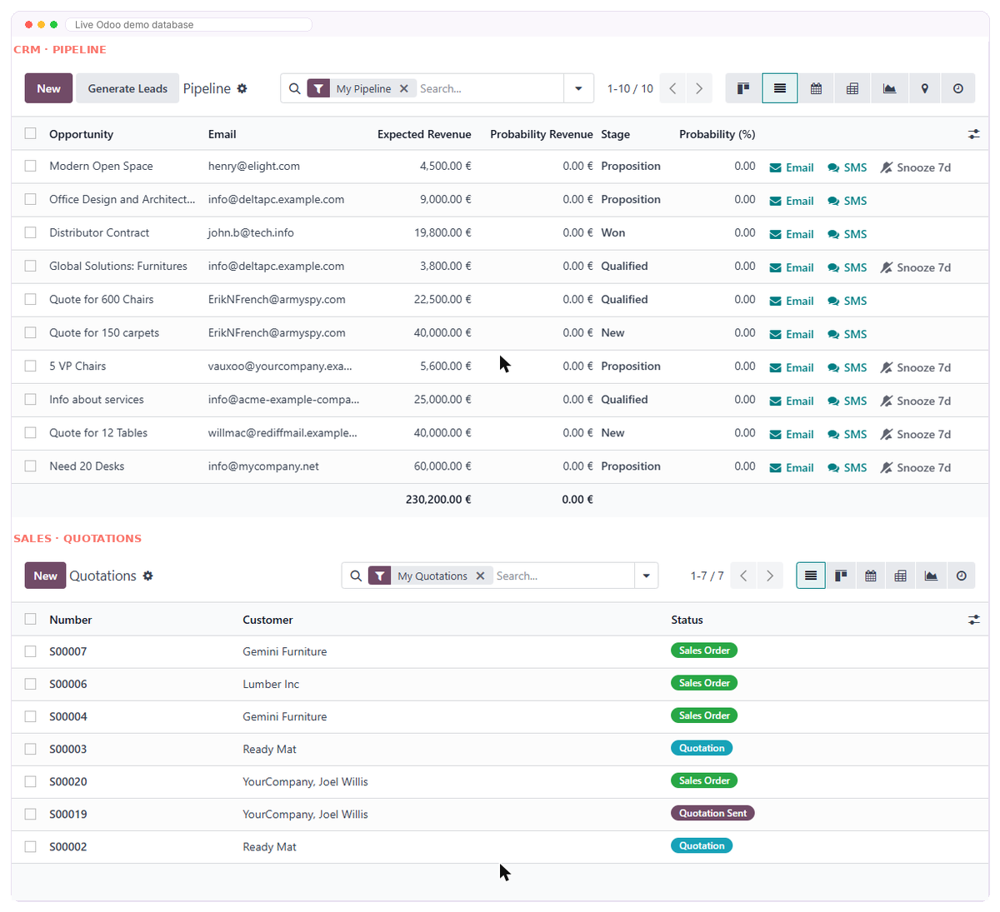
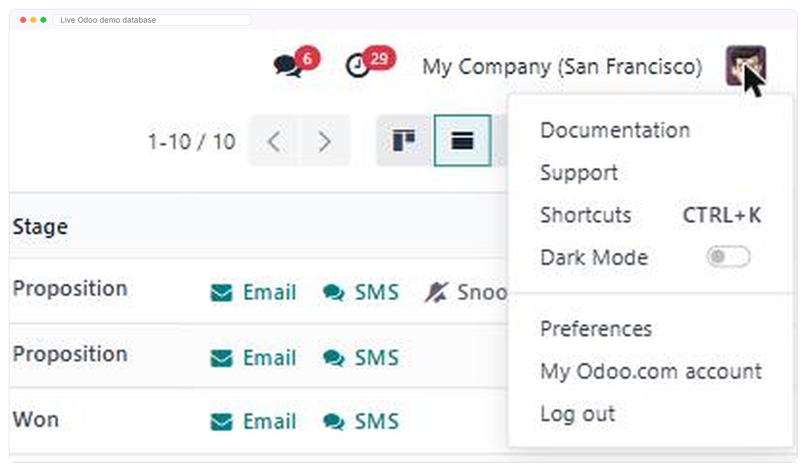
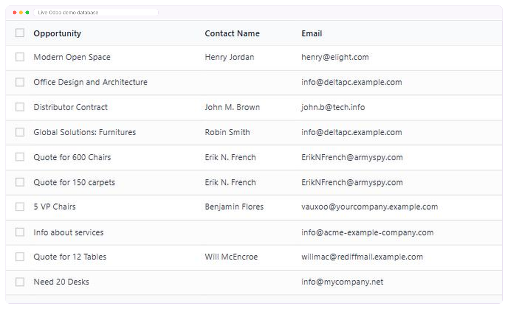

Optional Field Save · Odoo 16.0 · Free
Save your Odoo list view columns once — and keep them on every browser.
You tick the extra columns you need on a list view, and Odoo forgets them the moment you open a different browser. Optional Field Save writes that choice to your own user record instead, so it comes back on any machine you log in from — automatically, with nothing to set up.

|
See it before you commit anything There is no trial to start, because the module is free.Install it on a test database, tick a few columns, then open Odoo in a second browser. That is the whole demonstration — and if you would rather watch someone else do it first, book thirty minutes with us. |
hub.doodex.net/r/meeting |
| 01/06 | Overview |
Free forever
Free, on every database you run. Then nothing, ever.
There is no paid edition of this module and no upgrade waiting behind a wall. Doodex earns from Odoo implementation work; small modules that came out of that work are given back.
|
One edition
Free optional_field_save · any number of databases
Published by Doodex, an Odoo services company. What we charge for is implementation, not licences. |
Six things you will never be asked for
|
1 field added to your database | 0 settings screens to configure | 0 external services contacted | 2 dependencies, both Odoo core | All list views, in every Odoo app |
What the module is for
Three steps, and you only ever perform the first one.
You tick the columnsOpen the ⚙ menu at the right of any list view header and choose the optional fields you want. It is the standard Odoo control — nothing new to learn. |
Odoo saves it twiceYour browser keeps the copy it always kept, and the module writes the same choice to your own user record in the database. There is no Save button to remember. |
It comes back on its ownNext log in — any browser, any computer, even after a cache clear — the saved choice loads with the web client and your columns are already set. |
It does not replace anything
Odoo's own browser storage keeps being written on every toggle, exactly as before. The module reads the saved database copy first and falls back to the browser copy when nothing has been saved yet, so a fresh install behaves like standard Odoo until you make your first choice.
Before you install
Ask us anything about this module
Not sure it fits your Odoo, or wondering what it would take on your own list views? Ask — a real person from the Doodex team answers.
|
|
|
Scan a code with your phone camera. The address under each code is the same page the code opens, written out so you can type it by hand.
| 02/06 | Use Cases |
Every team adds different columns — and loses them the same way
Optional Field Save extends the list view itself, so it covers every Odoo app at once. Whichever screen your team lives in, the layout they built there survives the next browser, the next laptop and the next cache clear.
|
|
| ||||||
|
|
|
Three moments where a saved layout pays for itself
|
|
|
The fields named above are the ones teams most often add. Exactly which columns can be shown or hidden depends on your Odoo version and on any customisations you have — the module remembers whichever ones your list views offer.
| 03/06 | Features |
Everything Optional Field Save does for your Odoo list views
Five features, and a screenshot of each one taken on a live Odoo database. If a claim is not pictured somewhere on this page, it is not a claim we make.
Feature 01 Pick your columns in the menu you already useNothing changes about how you choose columns. Open the ⚙ button at the right of any list view header, tick the optional fields you want, and carry on working. Each tick is written to your own user record straight away — no Save button to remember, no confirmation to dismiss.
|  |
 | Feature 02 Restored automatically on the next log inWhen the Odoo web client loads, the module fetches everything you have saved and puts it back in place before your list views render. You do not press anything. You simply find your columns where you left them — on a new browser, a new machine, or after a cache clear.
|
Feature 03 Every list view in every Odoo appThe module extends the shared component Odoo uses to draw list views, so it covers Contacts, Sales, Invoicing, Inventory, Purchase, Project, Helpdesk and any custom model you have added — without naming a single one of them.
|  |
 | Feature 04 Cleared at log outLogging out clears the cached column choices from that browser tab, so the next person signing in on a shared machine starts from their own layout instead of inheriting yours. It matters more than it sounds on a shop floor or a front desk.
|
Feature 05 Native behaviour kept intactOdoo's own browser storage is still written on every toggle. Uninstall the module later and everything falls back to standard Odoo, with no clean-up to do and no data stranded behind a module you no longer have.
|  |
Six things you will not have to worry about
|
| ||||
|
| ||||
|
|
| 04/06 | Why |
A small friction, repeated by everyone, all year
Choosing columns on an Odoo list view takes a minute. Choosing them again takes another. The cost is never the minute — it is the number of times your team spends it, on every machine, for as long as they use Odoo.
Every new machine starts blankA replacement laptop, a reimaged desktop, a second browser or a fresh profile — each one opens Odoo on the default columns, and somebody has to build the view again. |
Routine cleanup takes it with itClearing browsing data, an IT policy that wipes profiles, a private window for one quick check. Months of small adjustments disappear without anyone deciding they should. |
People settle for the defaultAfter rebuilding the same view a few times, most users stop bothering — and then work from a list that no longer shows the field they actually needed to see. |
Set the columns up once per person — not once per person, per machine, per browser, per year.
That is the whole of it. Installing takes about two minutes and costs nothing.
What changes the day you install it
Nothing your team has to learn, and three things they stop doing.
| The layout becomes part of the account Column choices are saved to your own user record, so they arrive with the login rather than with the machine. New laptop, new browser, borrowed desk — the view is already right. |
| Set-up time stops repeating Configuring list views becomes a one-off for each person, done whenever they like, instead of a small tax charged again after every IT change. |
| Onboarding work actually sticks Tune a new starter's list views on day one and the work survives their first cache clear, so consultants and team leads stop redoing it a fortnight later. |
Safe to install on a live database
Six reasons your Odoo administrator will not push back on this one.
|
|
| ||||||
|
|
|
Installation help
Want us to put it on your server?
Installing an Odoo module is a two-minute job for a technical team and an awkward afternoon for everyone else. If you would rather not, we can do it with you on a call.
|
|
|
Scan a code with your phone camera. The address under each code is the same page the code opens, written out so you can type it by hand.
| 05/06 | FAQs |
Twelve questions buyers actually ask
What does standard Odoo do today?
Odoo lets you show or hide optional columns on a list view through the ⚙ button in the header row, and it remembers your choice in that browser's local storage. It is a real feature — it is simply tied to the browser rather than to your account.
What exactly does this module change?
It adds a second, permanent copy. Every time you show or hide an optional column, the resulting list of visible fields is also written to the database against your user, and it is read back automatically when the Odoo web client loads.
Where is my column choice stored?
In one field on your own user record inside your Odoo database. Nowhere else. It is a small piece of JSON that lists, for each list view you have adjusted, the fields you chose to display.
Does it work on every list view?
Yes. The module extends the shared list-view component that Odoo uses everywhere, so Contacts, Sales, Invoicing, Inventory, Purchase, Project and any custom model you have built are all covered, each remembered separately.
Does it work on Odoo Community and Odoo Enterprise?
Yes, both. It depends only on Odoo's base and web modules, which are present in every installation. It also works on Odoo Online, Odoo.sh and self-hosted servers, wherever you are allowed to install a third-party module.
Will my colleagues see my columns?
No. The choice is saved per person, on the record of the user who made it. Two people using the same database keep two different layouts, and neither one overwrites the other.
What happens when I log out?
The module clears the column choices it had cached in that browser tab. This matters on shared computers: the next person to sign in starts from what the database holds for them, not from what you left behind.
Does it change how Odoo normally behaves?
No. Odoo's own browser storage is still written on every toggle, exactly as before. The module reads the saved database copy first and falls back to Odoo's browser copy when nothing has been saved yet, so a fresh install behaves like standard Odoo until you make your first choice.
Does anything leave my database?
No. There is no external service, no API key, no account to create and no outbound call of any kind. Everything happens between your browser and your own Odoo server.
Which Odoo version does it support?
Odoo 16.0. This listing is the 16.0 build. If you need it on a different major version, write to odoo@doodex.net and tell us which one — that is how we decide what to port next.
What is the licence, and what does it cost?
AGPL-3, and nothing. The full source ships with the module, on any number of databases and users, with no subscription, no renewal and no licence key. Doodex earns from Odoo implementation services, not from this module.
What if I uninstall it later?
Odoo removes the field the module added, and your list views go back to Odoo's standard browser-only behaviour. Because the module never stopped writing that browser copy, the columns you are looking at right now stay as they are on the machine you are using.
What it needs, and what it does not
What you need
| What you do not need
|
| 06/06 | Releases |
Public release history
Every published version is listed here with what changed in it. This list is updated with each release, so you can see for yourself whether the module is maintained.
16.0First release
[NEW]Optional list-view columns are saved to the database on your own user record. |
[NEW]Saved columns are restored automatically when the Odoo web client loads. |
[NEW]Cached column choices are cleared at log out, for shared computers. |
[IMP]Odoo's standard browser storage keeps being written, so nothing else changes. |
Found something that does not match this page? Write to odoo@doodex.net — corrections to the description matter to us as much as fixes to the code.
Works great with
Other Doodex modules, built the same way
Different problems, same approach: narrow scope, a one-time price and the limits stated up front. Each one installs on its own.
|
|
|
Free, on every database you run
Install it, and stop setting up the same columns twice
Optional Field Save is free and open source. If you want a hand installing it, or a look at what else is slowing your team down inside Odoo, the Doodex team is one scan away.
|
|
|
Optional Field Save · optional_field_save · Odoo 16.0 · AGPL-3 · published by Doodex